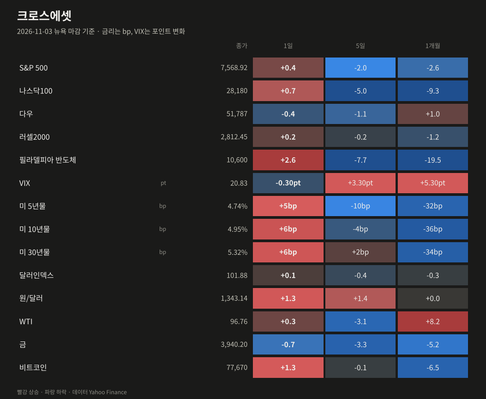
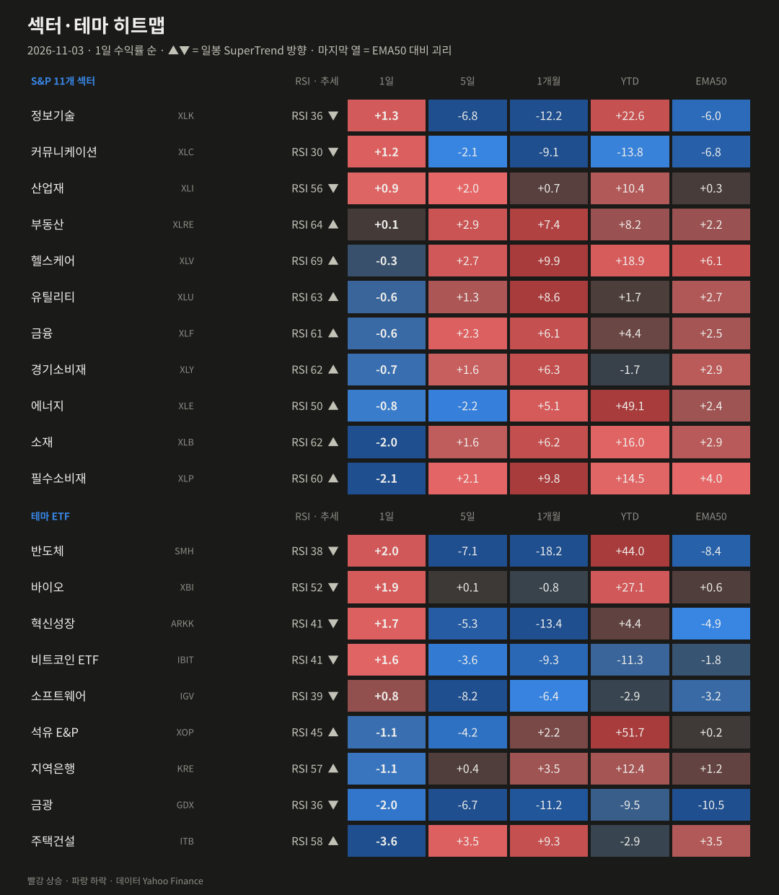
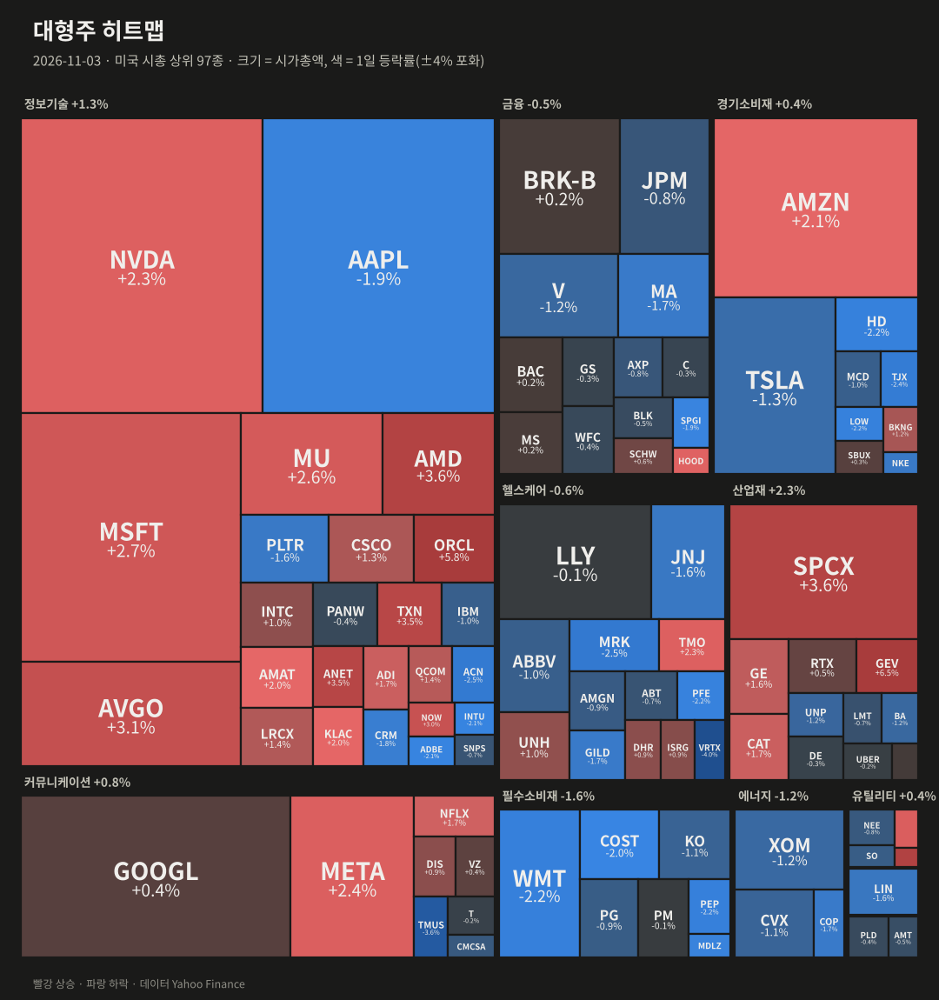
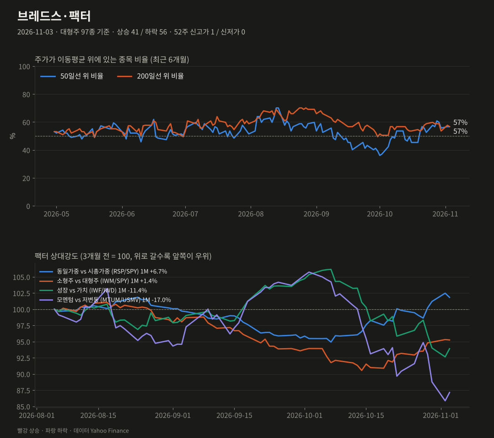
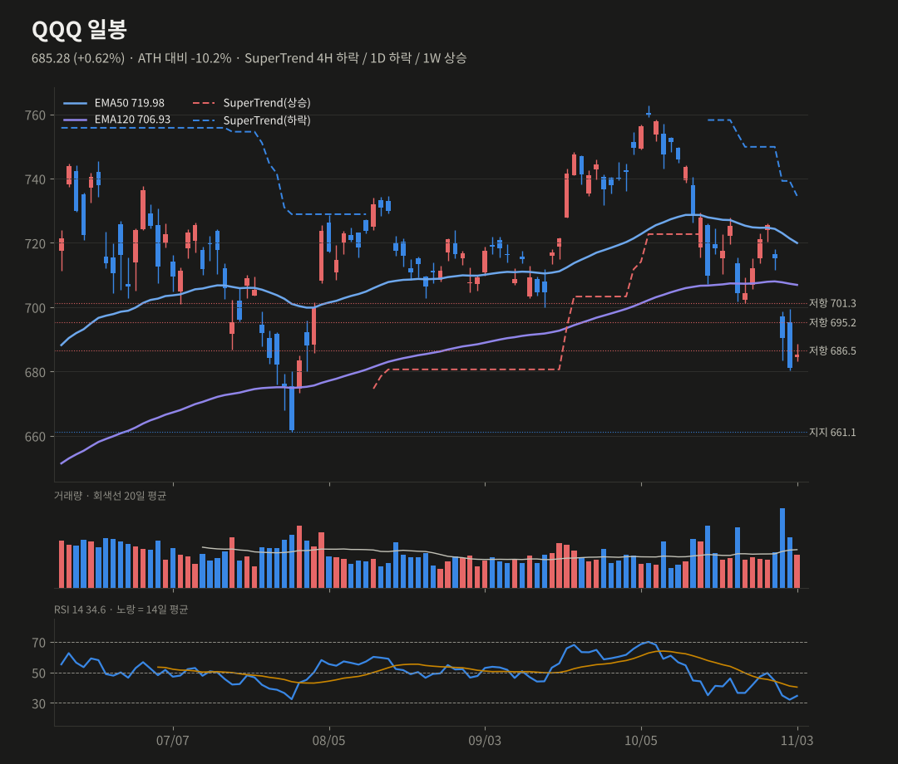
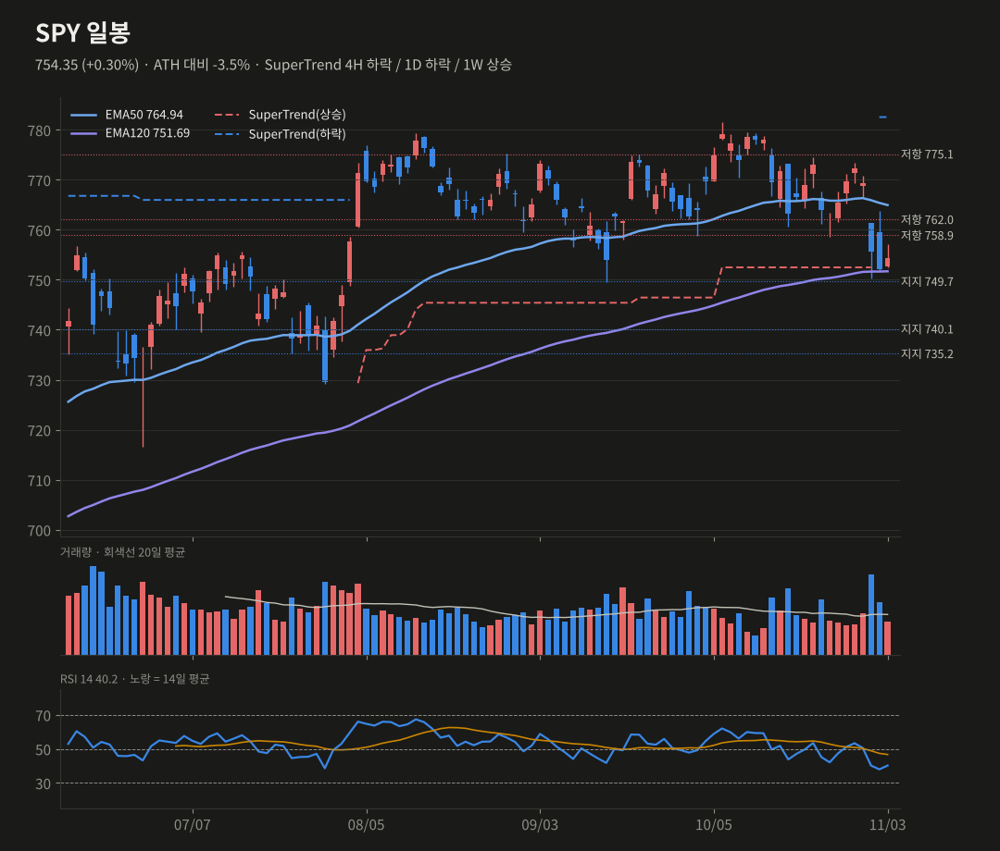
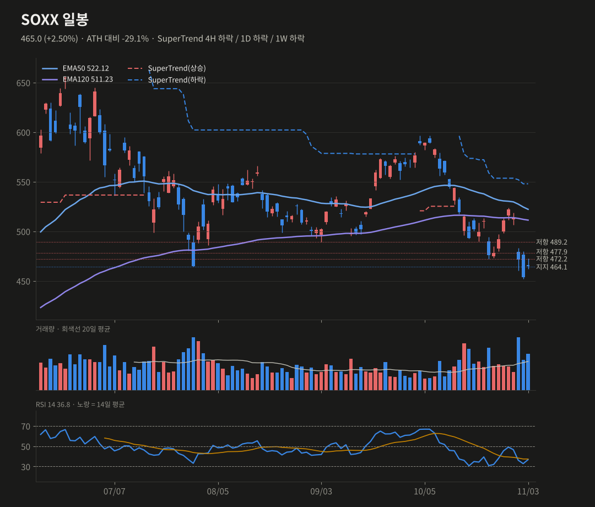
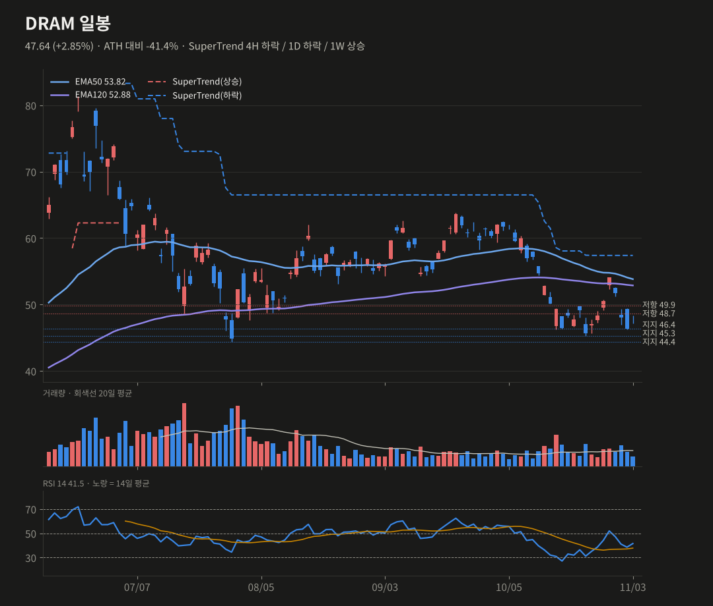

미증시 마감 브리핑
11/3(화) 뉴욕 마감 기준 · 생성 2026-11-04 07:41 KST
중간선거 당일 반도체가 반등해(SOX +2.6%) S&P가 4일 만에 올랐어요. 장 마감 후 AMD는 호실적으로 시간외 +5.8%예요.
S&P 5007,568.92+0.36%
나스닥10028,180+0.68%
다우51,787-0.38%
러셀20002,812.45+0.23%
반도체(SOX)10,600+2.63%
VIX20.83-0.30pt
미 10년물4.95%+5.80bp
원/달러1,343.14+1.33%
요약
- 반도체 반등(SOX +2.6%)으로 S&P가 4일 만에 상승했지만, 동일가중은 −0.3%였어요.
- AMD가 실적·가이던스 모두 예상을 넘어 시간외 +5.8%예요. SOXX는 시간외 +1.7%예요.
- 중간선거는 개표 중이고 확정 발표는 없어요. 10년물은 4.95%로 다시 올랐어요.
- SOXX는 주봉 EMA50(457)을 회복했어요. QQQ는 686.5, DRAM은 48.7 돌파가 관건이에요.
종합 판단
중간선거를 앞두고 한 달간의 '기술주 매도, 방어주 매수' 흐름이 하루 쉬어갔어요. 반도체는 과매도 반등에 AMD 호실적이 더해져 단기 확률을 올렸어요. 다만 QQQ와 SOXX 모두 일봉 추세선(SuperTrend) 아래라, 이번 반등은 아직 추세 전환이 아니라 되돌림이에요. 오늘 밤 선거 결과에 따른 금리·재정 경로가 반등의 지속 여부를 가를 거예요.
중간선거를 앞두고 한 달간의 '기술주 매도, 방어주 매수' 흐름이 하루 쉬어갔어요. 반도체는 과매도 반등에 AMD 호실적이 더해져 단기 확률을 올렸어요. 다만 QQQ와 SOXX 모두 일봉 추세선(SuperTrend) 아래라, 이번 반등은 아직 추세 전환이 아니라 되돌림이에요. 오늘 밤 선거 결과에 따른 금리·재정 경로가 반등의 지속 여부를 가를 거예요.
무엇이 시장을 움직였나
- 반도체 반등: SOX +2.6%였어요. AMD +3.7%, ANET +3.5%가 올랐고, 오라클은 +5.9%로 전날 낙폭(−8.8%)을 일부 되찾았어요. 아시아에서는 코스피와 대만 지수가 각각 −3.6% 급락한 뒤였어요.
- AI 전력 인프라: GEV +6.5%, VST +3.7%가 올랐어요.
- 약세 섹터: 필수소비재(−2.1%)와 소재(−2.0%)가 가장 약했고, 주택건설도 −3.6%였어요. 한 달 강했던 방어주에서 차익이 나왔어요.
- 10년물이 5.8bp 올라 4.95%예요. 금리 부담이 기술주 상단을 누르고 있다는 분석이 나왔어요. WTI는 96.8달러(+0.3%)였어요.
- 중간선거는 마감 시점에 개표 전이었어요. AP의 상·하원 확정 발표는 아직 없어요.
장 마감 후·시간외
- AMD 시간외 +5.8%(483.9 → 511.9)예요. 3분기 실적과 4분기 매출 가이던스가 모두 예상을 넘었다는 보도가 나왔어요. 데이터센터 매출은 약 2배 늘어난 것으로 전해졌어요.
- 시간외 기준 SOXX 473.0(+1.7%), DRAM 48.3(+1.5%), QQQ 688.0(+0.4%), SPY 755.8(+0.2%)이에요.

| 자산 | 종가 | 1일 | 5일 | 1개월 |
|---|---|---|---|---|
| S&P 500 | 7568.92 | +0.36% | -1.99% | -2.64% |
| 나스닥100 | 28180.26 | +0.68% | -4.96% | -9.32% |
| 다우 | 51786.72 | -0.38% | -1.13% | +1.01% |
| 러셀2000 | 2812.45 | +0.23% | -0.23% | -1.22% |
| 필라델피아 반도체 | 10600.4 | +2.63% | -7.68% | -19.53% |
| VIX | 20.83 | -0.30pt | +3.30pt | +5.30pt |
| 미 5년물 | 4.743 | +5.0bp | -9.7bp | -32.3bp |
| 미 10년물 | 4.952 | +5.8bp | -4.1bp | -35.9bp |
| 미 30년물 | 5.324 | +5.5bp | +1.9bp | -34.1bp |
| 달러인덱스 | 101.88 | +0.12% | -0.43% | -0.29% |
| 원/달러 | 1343.14 | +1.33% | +1.39% | +0.04% |
| WTI | 96.76 | +0.31% | -3.14% | +8.20% |
| 금 | 3940.2 | -0.74% | -3.30% | -5.21% |
| 비트코인 | 77670.22 | +1.29% | -0.13% | -6.53% |

| 섹터·테마 | 1일 | 5일 | 1개월 | YTD | RSI | 일봉 추세 |
|---|---|---|---|---|---|---|
| 반도체 SMH | +2.01% | -7.07% | -18.20% | +44.0% | 38 | 하락 |
| 바이오 XBI | +1.92% | +0.08% | -0.78% | +27.1% | 52 | 하락 |
| 혁신성장 ARKK | +1.72% | -5.26% | -13.43% | +4.4% | 41 | 하락 |
| 비트코인 ETF IBIT | +1.61% | -3.61% | -9.29% | -11.3% | 41 | 하락 |
| 정보기술 XLK | +1.31% | -6.85% | -12.15% | +22.6% | 36 | 하락 |
| 커뮤니케이션 XLC | +1.18% | -2.07% | -9.11% | -13.8% | 30 | 하락 |
| 산업재 XLI | +0.95% | +2.02% | +0.72% | +10.4% | 56 | 하락 |
| 소프트웨어 IGV | +0.75% | -8.16% | -6.43% | -2.9% | 39 | 하락 |
| 부동산 XLRE | +0.07% | +2.90% | +7.38% | +8.2% | 64 | 상승 |
| 헬스케어 XLV | -0.31% | +2.70% | +9.95% | +18.9% | 69 | 상승 |
| 유틸리티 XLU | -0.57% | +1.33% | +8.63% | +1.7% | 63 | 상승 |
| 금융 XLF | -0.64% | +2.34% | +6.14% | +4.4% | 61 | 상승 |
| 경기소비재 XLY | -0.70% | +1.63% | +6.26% | -1.7% | 62 | 상승 |
| 에너지 XLE | -0.85% | -2.24% | +5.09% | +49.1% | 50 | 상승 |
| 석유 E&P XOP | -1.05% | -4.24% | +2.18% | +51.7% | 45 | 상승 |
| 지역은행 KRE | -1.15% | +0.41% | +3.54% | +12.4% | 57 | 상승 |
| 금광 GDX | -1.96% | -6.72% | -11.23% | -9.5% | 36 | 하락 |
| 소재 XLB | -2.01% | +1.56% | +6.24% | +16.0% | 62 | 상승 |
| 필수소비재 XLP | -2.07% | +2.07% | +9.76% | +14.5% | 60 | 상승 |
| 주택건설 ITB | -3.56% | +3.51% | +9.28% | -2.9% | 58 | 상승 |

| 상승 상위 | 1일 | 거래량(20일 대비) | 하락 상위 | 1일 | 거래량 |
|---|---|---|---|---|---|
| GEV | +6.49% | x1.0 | VRTX | -4.05% | x1.57 |
| ORCL | +5.85% | x2.48 | TMUS | -3.58% | x0.77 |
| VST | +3.70% | x0.83 | MRK | -2.49% | x0.86 |
| AMD | +3.65% | x1.5 | ACN | -2.45% | x0.83 |
| SPCX | +3.62% | x0.7 | TJX | -2.39% | x0.94 |
| ANET | +3.52% | x1.97 | PEP | -2.24% | x0.8 |

대형주 97종: 상승 41 / 하락 56 · 50일선 위 56.7% (전일 56.7%, 5일 전 56.7%) · 200일선 위 56.7% · 52주 신고가 1 / 신저가 0
지수는 올랐지만 오른 종목은 41, 내린 종목은 56이었어요. 동일가중(RSP −0.33%)이 시총가중보다 0.62%p 약했어요. 최근 한 달 이어진 로테이션이 하루 되돌려지면서, 기술·AI 대형주로 자금이 다시 들어온 날이에요.
| 팩터 스프레드 | 1일 | 5일 | 1개월 |
|---|---|---|---|
| 동일가중 vs 시총가중 (RSP/SPY) | -0.62% | +2.85% | +6.68% |
| 소형주 vs 대형주 (IWM/SPY) | -0.07% | +1.89% | +1.41% |
| 성장 vs 가치 (IWF/IWD) | +1.35% | -3.96% | -11.41% |
| 모멘텀 vs 저변동 (MTUM/USMV) | +1.49% | -6.78% | -17.00% |
기술적 분석 · 확률
TradingView 설정과 맞춘 지표(EMA50·EMA120, SuperTrend ATR20×4, RSI14, MACD 12/26/9). 확률은 차트 기반 추정치예요.
QQQ 685.28 +0.62%
SuperTrend 4H 하락 / 1D 하락 / 1W 상승 · RSI 34.6
단기 반등 50% (+5) · 스윙 상승 35%
4H RSI가 30 위로 돌아왔고 4H 히스토그램도 상승 전환했어요. 시간외 688로 686.5 저항을 넘어선 상태예요. 일봉 히스토그램은 아직 확대 중(−4.55)이고, 일봉 EMA120(706.9) 아래라 스윙은 그대로 뒀어요.
상방 686.5 종가 회복 → 695.3, 701.3
하방 661.1 이탈 → 636.8
SuperTrend 4H 하락 / 1D 하락 / 1W 상승 · RSI 34.6
단기 반등 50% (+5) · 스윙 상승 35%
4H RSI가 30 위로 돌아왔고 4H 히스토그램도 상승 전환했어요. 시간외 688로 686.5 저항을 넘어선 상태예요. 일봉 히스토그램은 아직 확대 중(−4.55)이고, 일봉 EMA120(706.9) 아래라 스윙은 그대로 뒀어요.
상방 686.5 종가 회복 → 695.3, 701.3
하방 661.1 이탈 → 636.8
SPY 754.35 +0.30%
SuperTrend 4H 하락 / 1D 하락 / 1W 상승 · RSI 40.19
단기 반등 50% (+5) · 스윙 상승 40%
일봉 EMA120(751.7)을 이틀째 지켰고, 4H 히스토그램이 바닥을 찍고 돌아섰어요. 일봉 SuperTrend는 하락(782.5)이라 스윙은 보수적으로 봐요.
상방 758.9 회복 → 765.0(EMA50)
하방 749.7 이탈 → 740.2
SuperTrend 4H 하락 / 1D 하락 / 1W 상승 · RSI 40.19
단기 반등 50% (+5) · 스윙 상승 40%
일봉 EMA120(751.7)을 이틀째 지켰고, 4H 히스토그램이 바닥을 찍고 돌아섰어요. 일봉 SuperTrend는 하락(782.5)이라 스윙은 보수적으로 봐요.
상방 758.9 회복 → 765.0(EMA50)
하방 749.7 이탈 → 740.2
SOXX 465.0 +2.50%
SuperTrend 4H 하락 / 1D 하락 / 1W 하락 · RSI 36.77
단기 반등 50% (+10) · 스윙 상승 35% (+5)
주봉 EMA50(457.3)과 464.1을 하루 만에 되찾았어요. AMD 시간외 강세로 473 출발이 예상돼요. 4H 히스토그램 상승 전환, RSI 37로 과매도에서 벗어나는 중이에요. 일봉·주봉 SuperTrend는 여전히 하락이에요.
상방 472.2 종가 돌파 → 478.0, 489.2
하방 457.3 재이탈 → 450
SuperTrend 4H 하락 / 1D 하락 / 1W 하락 · RSI 36.77
단기 반등 50% (+10) · 스윙 상승 35% (+5)
주봉 EMA50(457.3)과 464.1을 하루 만에 되찾았어요. AMD 시간외 강세로 473 출발이 예상돼요. 4H 히스토그램 상승 전환, RSI 37로 과매도에서 벗어나는 중이에요. 일봉·주봉 SuperTrend는 여전히 하락이에요.
상방 472.2 종가 돌파 → 478.0, 489.2
하방 457.3 재이탈 → 450
DRAM 47.64 +2.85%
SuperTrend 4H 하락 / 1D 하락 / 1W 상승 · RSI 41.53
단기 반등 45% (+5) · 스윙 상승 35%
주봉 EMA50(46.9)을 되찾고 주봉 RSI가 50 위로 올라왔어요. 일봉 RSI도 평균선 위예요. 4H SuperTrend(53.7)와 일봉 EMA 밀집대(52.9~53.8)는 한참 위예요. 주봉 이력이 짧아 일봉 위주로 판단해요.
상방 48.7 돌파 → 49.9, 51.7(4H EMA50)
하방 46.4 이탈 → 45.3, 44.4
SuperTrend 4H 하락 / 1D 하락 / 1W 상승 · RSI 41.53
단기 반등 45% (+5) · 스윙 상승 35%
주봉 EMA50(46.9)을 되찾고 주봉 RSI가 50 위로 올라왔어요. 일봉 RSI도 평균선 위예요. 4H SuperTrend(53.7)와 일봉 EMA 밀집대(52.9~53.8)는 한참 위예요. 주봉 이력이 짧아 일봉 위주로 판단해요.
상방 48.7 돌파 → 49.9, 51.7(4H EMA50)
하방 46.4 이탈 → 45.3, 44.4




일정
- 중간선거 개표 결과(11/4 장 반영)
- AMD 시간외 강세의 반도체 확산 여부
- 12월 FOMC 인상 여부
출처
- Stock Market Today Live, November 3, 2026: Chip Stocks Lift the Nasdaq, Then AMD Jumps After the Close (StockTitan)
- Stock Market Today (Nov. 3, 2026): Nasdaq, Russell 2000 finish higher in homestretch of U.S. midterm election (TheStreet)
- AMD stock jumps after hours as quarterly results, revenue guidance beat estimates (Investing.com, 헤드라인만 확인)
데이터 Yahoo Finance·Nasdaq. 색은 한국식(빨강 상승·파랑 하락). 투자 판단의 참고 자료예요. 지난 브리핑